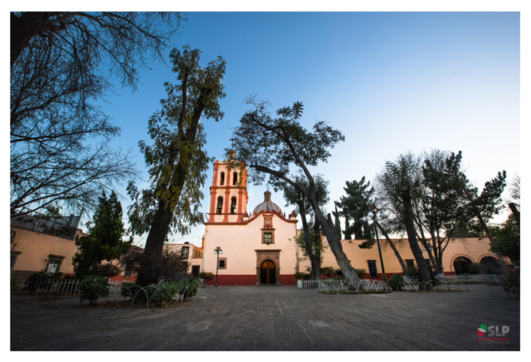

Los Siete Barrios de San Luis Potosí

Barrio de Tlaxcala
Barrio de San Miguelito
Barrio de Montecillo
Barrio de San Juan de Guadalupe
Barrio de San Sebastián
Barrio de Santiago
Barrio de Tequisquiapan